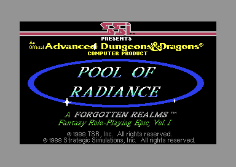
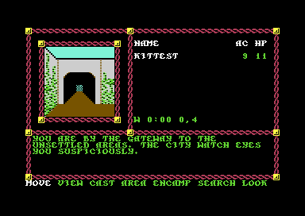
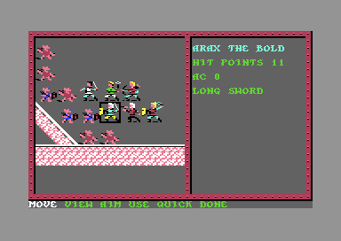
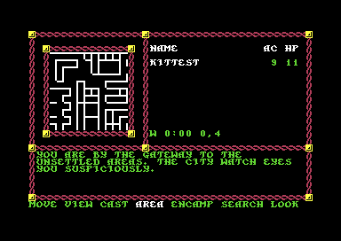

<meta charset="utf-8">
<meta name="viewport" content="width=device-width, initial-scale=1">
<title>Pool of Radiance</title>
<link rel="preconnect" href="https://fonts.googleapis.com">
<link rel="stylesheet" href="https://fonts.googleapis.com/css2?family=Lato:wght@400;700;900&family=IBM+Plex+Mono:wght@400;500&display=swap">
<style>
:root{
  --bg:#23262d; --paper:#e9e7e1; --surface:#ffffff; --surface-2:#f1efea; --line:#d5d3cc; --line-soft:#e0ded8;
  --ink:#2f3136; --ink-soft:#55585f; --ink-mute:#80838a;
  --link:#1f5fa8; --link-hover:#154480; --accent:#1f5fa8;
  --amber:#c25a00; --cyan:#1f5fa8; --coral:#d04a3a; --green:#2a8a4a; --violet:#4a5bd6; --hl:#fff0c2;
  --chip:#2f3136; --chip-ink:#ffffff;
  --c64blue:#40318d; --c64grey:#686868;
  --fd:'Lato',system-ui,sans-serif; --fb:'Lato',system-ui,sans-serif; --fm:'IBM Plex Mono',ui-monospace,Menlo,monospace;
  --col:1080px; --gx:68px; --fs:17px; --lh:1.6; --hw:900; --h1:46px; --h2:26px; --sy:48px; --pp:26px; --r:10px;
  --plate-shadow:0 1px 2px rgba(0,0,0,.05),0 4px 14px rgba(0,0,0,.05);
}
*{box-sizing:border-box}
html{background:var(--bg);min-height:100%}
body{background:var(--paper);color:var(--ink);font-family:var(--fb);font-size:var(--fs);line-height:var(--lh);max-width:var(--col);margin:0 auto;min-height:100vh;padding:0 0 4rem}
h1,h2,h3{font-weight:var(--hw);letter-spacing:-.01em;text-wrap:balance;color:var(--ink);margin:0}
.wrap{padding:0 var(--gx)}
.hero{padding:48px var(--gx) 8px;text-align:left}
.eyebrow{font-family:var(--fm);font-size:12px;letter-spacing:.08em;text-transform:uppercase;color:var(--ink-mute);margin:0 0 10px}
.hero h1{font-size:var(--h1);line-height:1.15;letter-spacing:-.02em;margin:0 0 14px}
.hero .sub{margin:0 0 .6em;color:var(--ink-soft)}
section{padding:var(--sy) 0 24px}
section:last-of-type{border-bottom:none}
.fig{font-family:var(--fm);font-size:12px;letter-spacing:.08em;text-transform:uppercase;color:var(--ink-mute);margin:0 0 10px}
h2.t{font-size:var(--h2);margin-bottom:12px}
.lede{color:var(--ink-soft);margin:0 0 30px}
.plate{background:var(--surface);border:1px solid var(--line);border-radius:var(--r);padding:var(--pp);box-shadow:var(--plate-shadow)}
.cap{font-size:14px;color:var(--ink-mute);margin-top:14px;line-height:1.55}
.cap b{color:var(--ink);font-weight:700}
code{font-family:var(--fm);font-size:.82em;background:var(--chip);color:var(--chip-ink);border-radius:4px;padding:2px 6px;white-space:nowrap}

.por-shots{display:grid;grid-template-columns:repeat(3,minmax(0,1fr));gap:14px}
.por-shots figure{margin:0}
.por-shots img{width:100%;image-rendering:pixelated;border-radius:4px;display:block}
.por-shots figcaption{font-size:13px;color:var(--ink-mute);margin-top:6px;line-height:1.4}
.por-tbl{border-collapse:collapse;width:100%;font-size:14.5px;margin:10px 0}
.por-tbl th,.por-tbl td{border-bottom:1px solid var(--line-soft);padding:6px 8px;text-align:left;vertical-align:top}
.por-tbl th{font-family:var(--fm);font-size:11.5px;text-transform:uppercase;letter-spacing:.06em;color:var(--ink-mute);font-weight:500}
.por-m{font-family:var(--fm);font-size:.86em}
.por-two{display:grid;grid-template-columns:minmax(0,1fr) minmax(0,1fr);gap:18px;align-items:start}
.por-map{width:100%;max-width:420px;image-rendering:pixelated;cursor:crosshair;display:block;border-radius:4px}
.por-frame{width:100%;max-width:768px;image-rendering:pixelated;display:block;border-radius:4px}
.por-area{width:100%;max-width:420px;image-rendering:pixelated;display:block;border-radius:4px}
.por-out{font-family:var(--fm);font-size:13px;background:var(--surface-2);border-radius:6px;padding:10px 12px;margin-top:12px;min-height:3.2em;white-space:pre-wrap}
.por-btns{display:flex;flex-wrap:wrap;gap:6px;margin:0 0 12px}
.por-btn{font-family:var(--fm);font-size:12.5px;border:1px solid var(--line);background:var(--surface);color:var(--ink);border-radius:6px;padding:5px 10px;cursor:pointer}
.por-btn[aria-pressed="true"]{background:var(--ink);color:#fff;border-color:var(--ink)}
.por-ecl{font-family:var(--fm);font-size:12.5px;line-height:1.55;background:#1d1f24;color:#e6e3da;border-radius:8px;padding:12px 14px;max-height:420px;overflow:auto;white-space:pre}
.por-ecl .a{color:#8f949c}.por-ecl .c{color:#ffd37a}.por-ecl .s{color:#9fd99a}.por-ecl .v{color:#9cc7ff}
.por-dice{display:flex;flex-wrap:wrap;gap:8px;margin:12px 0}
.por-die{font-family:var(--fm);font-size:14px;border:1px solid var(--line);border-radius:6px;padding:6px 10px;background:var(--surface-2);min-width:4.2em;text-align:center}
.por-die.best{background:var(--hl);border-color:var(--amber);font-weight:700}
.por-strip{display:grid;grid-template-columns:repeat(20,minmax(0,1fr));gap:3px;margin:12px 0 4px}
.por-strip span{font-family:var(--fm);font-size:11.5px;text-align:center;padding:6px 0;border-radius:4px;background:#e4e1da;color:var(--ink-mute)}
.por-strip span.hit{background:var(--green);color:#fff}
.por-row{display:flex;flex-wrap:wrap;gap:18px;align-items:center;font-family:var(--fm);font-size:13px}
.por-row input[type=range]{width:200px}
@media (max-width:760px){.por-shots{grid-template-columns:1fr}.por-two{grid-template-columns:1fr}:root{--gx:18px}}
</style>
<!-- tabs -->
<header class="hero">
  <p class="eyebrow">1988 · SSI</p>
  <h1>Pool of Radiance</h1>
  <p class="sub">Every block of the ruined city is a 16 by 16 grid of walls, stored in 1,024 bytes. Everything that happens there, from the city watch moving the party along to the dragon at the end, is a script: a small program in the game's own language of 62 commands, read as the party walks.</p>
</header>
<main class="wrap">

<section>
  <p class="fig">01 · The game</p>
  <h2 class="t">A party of six in the ruins of Phlan</h2>
  <p>Pool of Radiance was the first computer game made under licence from TSR's Advanced Dungeons &amp; Dragons. The player builds a party of up to six characters, choosing each one's race, class and alignment and rolling the six ability scores. The party arrives in New Phlan, the one civilised quarter of a city overrun by monsters, and the city council sends it out to clear the rest, block by block.</p>
  <p>Towns and dungeons are seen from inside, in a small picture framed at the top left, and the party moves one square at a time. When monsters appear the game offers combat, waiting, fleeing, advancing or talking. A fight moves to a battlefield seen from above, where each character in turn swings, shoots, casts a spell or flees. Between fights the party camps to heal and memorise spells. The game ends when the party kills the dragon in which Tyranthraxus, the spirit behind the monsters, is living.</p>
  <div class="por-shots">
    <figure><figcaption>The title picture, with its tune.</figcaption></figure>
    <figure><figcaption>New Phlan: the 3D view, the party, the clock and the square, and the adventure menu.</figcaption></figure>
    <figure><figcaption>A fight with kobolds, on the battlefield seen from above.</figcaption></figure>
  </div>
</section>

<section data-part="resident">
  <p class="fig">02 · The screen</p>
  <h2 class="t">The 3D view is drawn with text characters</h2>
  <p class="lede">At New Phlan's gateway the play screen uses no bitmap and no sprites. Everything on it, from the frame of rope and the party list to the picture of the street ahead, is 1,000 characters on a grid of 40 by 25. Monsters met in the view are the one thing drawn with sprites (<code>$CFF8</code>).</p>
  <div class="plate">
    <canvas id="por-frame" class="por-frame" width="768" height="544"></canvas>
    <p class="cap">The play screen at New Phlan's gateway, drawn by this page from the game's own memory: the screen, the character shapes and the video chip's settings, recorded over one frame in the emulator. All 104,448 pixels match the emulator's picture of the same frame.</p>
  </div>
  <p>The C64's video chip draws a text screen from two things in memory: a list of 1,000 character numbers, one for each place on the grid, and the shapes of 256 characters, 8 bytes each. Pool of Radiance keeps its list at <code>$CC00</code> and its shapes at <code>$D000</code>, and turns on multicolour mode (<code>$3A72</code>). In that mode a character whose colour number is 8 or more is drawn as 4 double-width pixels across and 8 down, in up to four colours, and any other character in single pixels of one colour. The place <code>$D000</code> is also where the processor finds the sound, video and input chips. The video chip always reads the memory underneath, but the processor has to switch the chips out of the way to write there, holding off the interrupts while it does (<code>$84D8</code>). The pictures shown in the window, a whole scene or a body and a head, are drawn by rewriting the shapes of characters 128 to 255 (<code>$841C</code>).</p>
</section>

<section data-part="title">
  <p class="fig">03 · Music</p>
  <h2 class="t">Music: the title tune, played by the game's own driver</h2>
  <p class="lede">There is one tune in the game. It plays over the title picture until a key is pressed, or until it has ended and the title has waited through 256 more silent passes.</p>
  <div class="plate">
    <div id="por-sid"></div>
    <p class="cap">The page plays the tune with the game's own sound driver, the code that turns the tune's bytes into sound. The driver and the tune are copied from the title's memory (<code>$BA00</code>-<code>$BDD2</code> and <code>$C400</code>-<code>$CF5A</code>, addresses in the C64's memory written in hexadecimal, each a link to the code) and run on a model of the C64's processor, the 6502. What the driver writes goes to a model of the SID, the C64's sound chip. The page starts the tune the way the title does (<code>start_tune</code>, <code>$0D4A</code>) and calls the driver 60 times a second, as the C64's timer interrupt does, so the chip gets the same values in the same order as in the game. The notes are tuned for an American (NTSC) machine, and the page plays them at that machine's speed. The lowest notes, near 33 Hz, are below what a laptop's or a phone's speaker can play.</p>
  </div>
  <p>The driver plays three streams of commands, one for each of the SID's three voices. A note is two bytes: the first gives its length and its instrument, the second its pitch. There are eight lengths, from 6 to 96 sixtieths of a second (<code>$BD7B</code>), and a quarter note of 24 makes the tempo 150 beats a minute. There are eight instruments of nine bytes each (<code>$BD8B</code>). Each gives the waveform, the envelope (how the note's volume rises and falls), a transposition (a shift up or down in pitch), and the pulse width, which changes the tone of a square wave. A note takes whichever voice is free, so the title tune is written as a single stream and still plays chords. A pitch byte with its top bit set says another note starts at the same moment, and that note finds another free voice.</p>
  <p>The tune is entry 12 of the title's music table (<code>$C400</code>). Its 1,100 notes and 92 rests last 5,976 sixtieths of a second, a minute and 40 seconds. Entries 13 to 19 start the same stream partway through, at the beginning of each of its later sections. The game never asks for them. The buttons after the first play them.</p>
</section>

<section data-part="tables">
  <p class="fig">04 · Sound</p>
  <h2 class="t">Sound: eleven effects from the same driver</h2>
  <p class="lede">Once play begins, the title's driver is replaced by a twin, SOUNDFX. It has the same code, with eleven short sounds and a silence in place of the tune.</p>
  <div class="plate">
    <div id="por-sfx"></div>
    <p class="cap">The game's SOUNDFX driver and sounds (<code>$BA00</code>-<code>$BF53</code>), run as for the tune. Each button starts a sound the way the game does: a call to <code>$BA03</code> with the sound's number in the processor's A register. Sound 0 is the silence.</p>
  </div>
  <p>The sounds are not made of notes. Each one sets a voice's frequency, waveform and envelope directly. The driver then slides the frequency or the pulse width a little on every call, so a single command makes a rising burst or a warble. The table shows where the game asks for each sound.</p>
  <table class="por-tbl">
    <tr><th>Sound</th><th>When it plays</th><th>Asked for at</th></tr>
    <tr><td>1</td><td>A missile or a spell flies across the battlefield</td><td data-part="combat-set"><code>$657B</code></td></tr>
    <tr><td>2</td><td>An attack misses</td><td data-part="combat"><code>$17E3</code></td></tr>
    <tr><td>3</td><td>A spell is cast in a fight</td><td data-part="combat-set"><code>$A84A</code></td></tr>
    <tr><td>4</td><td>The dragon roars in the last scene</td><td data-part="final"><code>$093B</code></td></tr>
    <tr><td>6</td><td>An attack hits, a spell does damage, or the party tries to bash a locked door</td><td data-part="combat"><code>$17E3</code>; <span data-part="dungeon"><code>$0F13</code></span></td></tr>
    <tr><td>8</td><td>A step, in a town or a dungeon and on the battlefield; some scripts ask for it too</td><td data-part="dungeon"><code>$098B</code></td></tr>
    <tr><td>9</td><td>A step into a wall</td><td data-part="dungeon"><code>$08F4</code></td></tr>
    <tr><td>10</td><td>The spirit leaves the dragon's body; one other script asks for it</td><td data-part="final"><code>$0A0B</code></td></tr>
    <tr><td>5, 7, 11</td><td>Never asked for: the game's code does not start them, and neither does any script that starts a sound through its CALL command</td><td></td></tr>
  </table>
</section>

<section data-part="view">
  <p class="fig">05 · The maps</p>
  <h2 class="t">Each block is a 16 by 16 grid of walls</h2>
  <p class="lede">Every town quarter and dungeon level is one file of four pages of 256 bytes. Each of the 256 squares has one byte in each page.</p>
  <div class="plate">
    <div class="por-two">
      <div><canvas id="por-map" class="por-map" width="420" height="420"></canvas></div>
      <div></div>
    </div>
    <div class="por-out" id="por-map-out">Click a square.</div>
    <p class="cap">Left: New Phlan, the block the game starts in, drawn from its map file GEO00 as the game loads it at <code>$0400</code>. White lines are walls, a gap with yellow ends is a door that opens, and red is a locked door. Right: the game's own AREA command at the gateway, showing the 11 by 11 squares at the top left of the same map. AREA draws only the north and east side of each square (<span data-part="dungeon"><code>$1266</code></span>), so a wall the map gives only to a south or west side does not show there.</p>
  </div>
  <p>A square's number is its row times 16 plus its column (<code>$C29D</code>). The first page holds the walls on a square's north and east sides, four bits (half a byte) each, and the second page the south and west sides (<code>$C39A</code>). A wall's number picks one of the wall pictures the area loads, and 0 is open. The fourth page holds two bits for each side that turn a wall into a door. A 1 is a door that opens when the party walks into it, and a 2 or 3 is a locked one, which the party must pick or bash (<span data-part="dungeon"><code>$0E64</code></span>). Only the strongest characters can bash a door of type 3. The third page holds a byte for each square, which the 3D view reads with the walls (<code>$C3D2</code>).</p>
  <p>A wall between two squares is stored twice, as a side of each square, and the two can differ. Each side has its own picture number, and in 16 of the 29 maps some walls are there on one side only. A step is judged by the side the party faces in its own square (<span data-part="dungeon"><code>$10EC</code></span>), so such a wall stops the party from one direction and lets it through from the other. A door the party bashes open is marked open on both sides (<span data-part="dungeon"><code>$0EE8</code></span>). Every one of the 29 maps on the disks is drawn on the <a href="levels.html">Maps tab</a>.</p>
</section>

<section data-part="dungeon" id="por-scripts">
  <p class="fig">06 · The scripts</p>
  <h2 class="t">Everything that happens in a place is a script</h2>
  <p class="lede">Each block has a script file (ECL) beside its map. The game is split into modules, programs loaded from disk one at a time, and the adventure module is the one that walks the party through towns and dungeons. It does not know where the shops are or what a room holds. The script decides, and the module runs it.</p>
  <div class="plate">
    <div class="por-btns" id="por-ecl-btns"></div>
    <div class="por-ecl" id="por-ecl"></div>
    <p class="cap">New Phlan's script, ECL00, decoded from its bytes as the game reads it (<code>$1581</code>), loaded at <span class="por-m">$9900</span>. A choice above shows where the game enters it. An address in square brackets is a variable in the game's memory: <span class="por-m">[$6DD2]</span> and <span class="por-m">[$6DD3]</span> are how often a rest is interrupted, and <span class="por-m">[$49C9]</span> is the hour. Command names are descriptions of what each command's routine does.</p>
  </div>
  <p>A script starts with five GOTO commands at fixed places, which are its five entries (<code>$1A0B</code>). The module enters the script at the first before every step and at the second when the party arrives on a square. It enters at the third when the party makes camp, at the fourth when the party comes back from a camp whose rest was interrupted, and at the fifth when the block is first entered. New Phlan's camp entry is why camping in the town never lasts. It sets the rest to be interrupted on every pass, with a chance of 101 in 100 against a roll of 0 to 99 (<span data-part="camp"><code>$1E0F</code></span>). The script's fourth entry then has the city watch move the party along.</p>
  <p>There are 62 commands (<code>$15A9</code>). A command is followed by its operands, the values it works on, and each operand starts with a byte saying what kind it is (<code>$1663</code>). It can be a number, the value stored at an address in memory, a text packed six bits to a letter, or an address itself. Among the commands are arithmetic, comparisons, menus, monster encounters and treasure. Six IF commands skip the next command when their test fails, and CALL runs the processor's own machine code anywhere in memory.</p>
</section>

<section data-part="gen">
  <p class="fig">07 · Creating a character</p>
  <h2 class="t">Each ability score is the best of six rolls</h2>
  <p class="lede">A character has six ability scores, such as strength and intelligence. The game rolls three six-sided dice six times for each score and keeps the highest total.</p>
  <div class="plate">
    <button type="button" class="por-btn" id="por-roll">Roll an ability score</button>
    <div class="por-dice" id="por-dice"></div>
    <p class="cap">Each press runs the code of GEN, the character-creation module (<code>roll_ability</code>, <code>$0D1F</code>), and the dice code it calls in the part of the game that stays in memory, on a model of the 6502. The page first sets the six bytes of the game's random-number generator (<span data-part="resident"><code>$03C2</code></span>-<span data-part="resident"><code>$03C7</code></span>) at random. The highlighted total is the one the game keeps.</p>
  </div>
  <p>A single roll of three dice averages 10.5. The best of six averages just over 14, and comes to 15 or more a little under half the time. A score of 3 needs all eighteen dice to come up 1. GEN then adjusts the score from a table by race and gender (<code>$0D4A</code>), which gave a new human one point more strength and constitution than the dice did, and holds it between that race's and gender's lowest and highest score.</p>
</section>

<section data-part="combat">
  <p class="fig">08 · Combat</p>
  <h2 class="t">To hit, a d20 must reach THAC0 minus the target's armour class</h2>
  <p class="lede">An attack is a roll of a d20, a twenty-sided die. THAC0 is AD&amp;D's "to hit armour class 0": the roll a character needs to hit a target of armour class 0. Lower is better for both numbers.</p>
  <div class="plate">
    <div class="por-row">
      <label>THAC0 <input type="range" id="por-thac0" min="1" max="25" value="20"> <b id="por-thac0-v"></b></label>
      <label>Target's AC <input type="range" id="por-ac" min="-10" max="10" value="5"> <b id="por-ac-v"></b></label>
    </div>
    <div class="por-strip" id="por-strip"></div>
    <div class="por-out" id="por-hit-out"></div>
    <p class="cap">The rolls of a d20 that hit, as the attack routine judges them (<code>hit_roll</code>, <code>$1272</code>): the roll plus 60 less THAC0 must reach 60 less the armour class. A 1 always misses and a 20 counts as 100, which always hits. The side's own bonus, 0 here, is added too (<code>$1613</code>), and a spell or an item can change the roll before it is judged.</p>
  </div>
  <p>The game keeps armour class and THAC0 as 60 less their value (<span data-part="resident"><code>$3A36</code></span>), so that a better figure is a bigger byte. A new first-level thief has a THAC0 of 21, and a character with no armour an armour class of 10.</p>
  <p>Which armour class counts depends on where the blow comes from (<code>$12B1</code>). Each combatant has a front and a rear armour class. A backstab, and a swing at a character moving away, strike the rear one. So does an attack from a side the target does not face, once the target has been attacked twice since its last turn from directions far enough apart.</p>
</section>

</main>
<footer style="margin:16px 0 0;padding:22px var(--gx) 0;border-top:1px solid #e0ded8;font-family:'IBM Plex Mono',ui-monospace,Menlo,monospace;font-size:12px;color:#80838a"><a href="https://github.com/gamesexplained/gamesexplained" style="color:#1f5fa8;text-decoration:none">GitHub</a> · <a href="https://discord.gg/3V9GWyRDWV" style="color:#1f5fa8;text-decoration:none">Discord</a><br>© Games Explained contributors. Write-ups, facts and symbol maps are available under <a href="https://creativecommons.org/licenses/by-sa/4.0/" style="color:#1f5fa8;text-decoration:none">CC BY-SA 4.0</a>; code under <a href="https://opensource.org/licenses/MIT" style="color:#1f5fa8;text-decoration:none">MIT</a></footer>
<script src="../../lib/c64.js"></script>
<script src="../../lib/sid.js"></script>
<script src="../../lib/cpu6502.js"></script>
<script>
/* por-music */
// createDriver for C64Sid: runs the game's own sound driver, MDRIVER at the title and SOUNDFX in
// play (the same code, $BA00-$BC6F in both, with their own tables after), on the kit's 6502
// (C64Cpu, from ../../lib/cpu6502.js, which sid.js passes in). Its memory is the listing's bytes
// over POR_MUSIC_RANGES for the tune (title part) or POR_SFX_RANGES for the effects (tables part).
// init(t) starts button t as the game does: the data's base into the driver's own copy of its zero
// page ($BA0E/$BA0F; MUSIC at $C400 as start_tune sets it, SOUNDFX's sounds at $BD7B as play keeps
// it), then sound_start through its jump at $BA03 with the entry's number in A. play() is one call
// of $BA00, as the KERNAL's interrupt makes it through irq ($3BEA), from CIA 1's timer: the page
// passes the timer's period. stop() starts entry 0, which points all three streams at silence, as
// title_end does. playing() is what tune_silent reads: a stream's wait or a voice's gate time not
// yet 0 ($BD35/$BD42, $BD37/$BD44, $BD39/$BD46). The driver writes the SID and reads none of it.
const POR_MUSIC_RANGES = [[0xBA00, 0xBDD2], [0xC400, 0xCF5A]];
const POR_SFX_RANGES = [[0xBA00, 0xBF53]];
const POR_TUNES = [{ name: 'The title tune', base: 0xC400, n: 12 }].concat(
  [2, 3, 4, 5, 6, 7, 8].map((s, i) => ({ name: 'From section ' + s + ' (entry ' + (13 + i) + ')', base: 0xC400, n: 13 + i })));
const POR_EFFECTS = [
  [1, 'A missile flies'], [2, 'A miss'], [3, 'A spell is cast'], [4, 'The dragon roars'], [5, 'Sound 5'],
  [6, 'A hit, or a door bashed open'], [7, 'Sound 7'], [8, 'A step'], [9, 'A step into a wall'],
  [10, 'The spirit leaves'], [11, 'Sound 11'],
].map(([n, name]) => ({ name: n + ': ' + name, base: 0xBD7B, n }));
// the KERNAL's timer A latch on an NTSC machine, $4295, plus 1: 60 calls a second
const POR_PERIOD = 0x4295 + 1;
function createDriver(D, C64Cpu) {
  const base = new Uint8Array(0x10000);
  for (const [ad, bytes] of D.mem) base.set(bytes, ad);
  const sid = new Uint8Array(25);
  let m, cpu, writes = [];
  const io = {                                                  // the chips at $D000-$DFFF
    read(ad) { throw new Error('the driver read $' + ad.toString(16)); },
    write(ad, val) { if (ad >= 0xD400 && ad <= 0xD418) { sid[ad - 0xD400] = val; writes.push(ad - 0xD400, val); return; } throw new Error('the driver wrote $' + ad.toString(16)); },
  };
  const start = (c, n) => { m[0xBA0E] = c.base & 0xFF; m[0xBA0F] = c.base >> 8; cpu.call(0xBA03, { a: n, x: 0, y: 0 }, { maxSteps: 100000 }); };
  return {
    sid,
    get writes() { return writes; },
    init(t) {
      const c = D.tunes[t];
      m = base.slice(); cpu = new C64Cpu.CPU(m, { port: 0x35, io });
      sid.fill(0); writes = [];
      start(c, c.n);
    },
    stop() { writes = []; start(D.tunes[0], 0); },
    play() { writes = []; cpu.call(0xBA00, { a: 0, x: 0, y: 0 }, { maxSteps: 100000 }); },
    playing() { return [0xBD35, 0xBD37, 0xBD39, 0xBD42, 0xBD44, 0xBD46].some((a) => m[a] !== 0); },
    voice(x) { return { instrument: m[0xBD4E + 2 * x], gate: m[0xBD42 + 2 * x], wait: m[0xBD35 + 2 * x] }; },
  };
}
// end of por-music
</script>
<script>
/* por-map */
// A GEO map, as the game loads it at $0400: four pages of 256 bytes, one byte of each for each of
// the 16 by 16 squares, numbered row times 16 plus column (view square_index, $C29D). Page 0 holds
// the north (high four bits) and east (low four) walls, page 1 the south and west (view wall_at,
// $C39A), 0 for open; page 3 two door bits for each side, north in bits 0-1, then east, south and
// west (dungeon door_state, $1143): 1 a door that opens, 2 and 3 a locked one (dungeon open_door,
// $0E64). Page 2 is a byte for each square that the view reads (square_info, $C3D2).
// porMapSquare(g, n) gives { walls: [n, e, s, w], doors: [n, e, s, w], info } for square n.
// porDrawMap(cv, g, opts) draws the map on a canvas, north at the top; opts.sel marks a square.
function porMapSquare(g, n) {
  const d = g[768 + n];
  return { walls: [g[n] >> 4, g[n] & 15, g[256 + n] >> 4, g[256 + n] & 15],
           doors: [d & 3, d >> 2 & 3, d >> 4 & 3, d >> 6 & 3], info: g[512 + n] };
}
function porDrawMap(cv, g, opts) {
  opts = opts || {};
  const ctx = cv.getContext('2d'), W = cv.width, P = 10, S = (W - 2 * P) / 16;
  ctx.fillStyle = '#2a2d6e'; ctx.fillRect(0, 0, W, W);
  ctx.fillStyle = 'rgba(255,255,255,.18)';
  for (let y = 0; y <= 16; y++) for (let x = 0; x <= 16; x++) ctx.fillRect(P + x * S - 1, P + y * S - 1, 2, 2);
  if (opts.sel != null) {
    ctx.fillStyle = 'rgba(255,211,77,.35)';
    ctx.fillRect(P + (opts.sel & 15) * S, P + (opts.sel >> 4) * S, S, S);
  }
  // each side: its two ends, from the square's top left corner, in squares
  const ends = [[0, 0, 1, 0], [1, 0, 1, 1], [0, 1, 1, 1], [0, 0, 0, 1]];
  ctx.lineCap = 'round';
  for (let n = 0; n < 256; n++) {
    const q = porMapSquare(g, n), x0 = P + (n & 15) * S, y0 = P + (n >> 4) * S;
    for (let s = 0; s < 4; s++) {
      if (!q.walls[s]) continue;
      const [a, b, c, d] = ends[s], x1 = x0 + a * S, y1 = y0 + b * S, x2 = x0 + c * S, y2 = y0 + d * S;
      const door = q.doors[s];
      ctx.lineWidth = 2.5;
      if (door === 0) { ctx.strokeStyle = '#f2f0ea'; ctx.beginPath(); ctx.moveTo(x1, y1); ctx.lineTo(x2, y2); ctx.stroke(); continue; }
      if (door >= 2) { ctx.strokeStyle = '#ff5a4a'; ctx.beginPath(); ctx.moveTo(x1, y1); ctx.lineTo(x2, y2); ctx.stroke(); continue; }
      ctx.strokeStyle = '#ffd34d';                                 // a door that opens: its two ends
      const f = 0.3;
      ctx.beginPath(); ctx.moveTo(x1, y1); ctx.lineTo(x1 + (x2 - x1) * f, y1 + (y2 - y1) * f);
      ctx.moveTo(x2, y2); ctx.lineTo(x2 - (x2 - x1) * f, y2 - (y2 - y1) * f); ctx.stroke();
    }
  }
  return { P, S };
}
function porSquareText(g, n) {
  const q = porMapSquare(g, n), side = ['north', 'east', 'south', 'west'];
  const door = ['', ', a door that opens', ', a locked door', ', a locked door'];
  return 'Square ' + n + ' (column ' + (n & 15) + ', row ' + (n >> 4) + ')\n' +
    side.map((s, i) => s + ': ' + (q.walls[i] ? 'wall ' + q.walls[i] + door[q.doors[i]] : 'open')).join('; ') +
    '\nthe third page: $' + q.info.toString(16).toUpperCase().padStart(2, '0');
}
const porB64 = (s) => Uint8Array.from(atob(s), (c) => c.charCodeAt(0));
// end of por-map
</script>
<script>
/* por-ecl */
// porDecode(b, base): the commands of a script file b (its bytes as loaded, at base, $9900), from
// the start to the end of the file, as the adventure module reads them (dungeon run_script,
// $1581): a command byte, 0-61 (command_handlers, $15A9), then its operands, each a kind byte and
// its value (get_operand, $1663): kind 0 a byte; 1 the byte at an address; 2 a 16-bit number; 3-$7F
// the word at an address; $80 a count of bytes and a text packed six bits to a character
// (decode_string, $150A: 1-31 are A-_ and 32-63 themselves, 0 ends it); $81-$FF an address. Most
// commands take as many operands as operand_counts ($1625) says. Five read others: SETUP MONSTER 3
// and ENCOUNTER MENU 14, one more than the table; ADD NPC 2, where the table says 1; the menus,
// ON GOTO and ON GOSUB a count of their own. Gives [{ at, cmd, ops: [{ kind, v }] }], and stops at
// a byte that is not a command (a table among the commands).
const POR_ECL_NAMES = ['EXIT', 'GOTO', 'GOSUB', 'COMPARE', 'ADD', 'SUBTRACT', 'DIVIDE', 'MULTIPLY',
  'RANDOM', 'SAVE', 'LOAD CHARACTER', 'LOAD MONSTER', 'SETUP MONSTER', 'APPROACH', 'PICTURE',
  'INPUT NUMBER', 'INPUT STRING', 'PRINT', 'PRINT CLEAR', 'RETURN', 'COMPARE AND', 'VERTICAL MENU',
  'IF EQUAL', 'IF NOT EQUAL', 'IF LESS', 'IF GREATER', 'IF LESS OR EQUAL', 'IF GREATER OR EQUAL',
  'CLEAR MONSTERS', 'PARTY STRENGTH', 'CHECK PARTY', 'ADDRESS OF', 'NEW ECL', 'LOAD FILES',
  'PARTY SURPRISE', 'SURPRISE', 'COMBAT', 'ON GOTO', 'ON GOSUB', 'TREASURE', 'ROB', 'ENCOUNTER MENU',
  'GET TABLE', 'HORIZONTAL MENU', 'PARLAY', 'CALL', 'DAMAGE', 'AND', 'OR', 'SPRITES OFF', 'FIND ITEM',
  'PRINT RETURN', 'CLOCK', 'SAVE TABLE', 'ADD NPC', 'LOAD PIECES', 'PROGRAM', 'WHO', 'DELAY', 'SPELL',
  'PRINT GLYPHS', 'CLEAR BOX'];
// operand_counts ($1625), command by command
const POR_ECL_COUNTS = [0, 1, 1, 2, 3, 3, 3, 3, 2, 2, 1, 3, 2, 0, 1, 2, 2, 1, 1, 0, 4, 0, 0, 0, 0, 0, 0, 0, 0, 1, 6, 2, 1, 3, 2, 4, 0, 0, 0, 8, 3, 13, 3, 0, 6, 1, 5, 3, 3, 0, 1, 0, 1, 3, 1, 3, 1, 1, 0, 3, 1, 0];
function porText(b) {
  let s = '';
  for (let i = 0; i + 6 <= b.length * 8; i += 6) {
    const c = (((b[i >> 3] << 8) | (b[(i >> 3) + 1] || 0)) >> (10 - (i & 7))) & 63;
    if (c === 0) break;
    s += String.fromCharCode(c < 32 ? c + 0x40 : c);
  }
  return s;
}
function porDecode(b, base) {
  const out = [];
  let i = 0;
  const operand = () => {
    const k = b[i];
    if (k === 0) { const v = b[i + 1]; i += 2; return { kind: 0, v }; }
    if (k === 0x80) { const n = b[i + 1], v = porText(b.subarray(i + 2, i + 2 + n)); i += 2 + n; return { kind: 0x80, v }; }
    const v = b[i + 1] | b[i + 2] << 8; i += 3; return { kind: k, v };
  };
  while (i < b.length) {
    const at = i, cmd = b[i];
    if (cmd >= 62) break;
    i++;
    const ops = [];
    let n = POR_ECL_COUNTS[cmd];
    if (cmd === 12) n = 3;
    if (cmd === 41) n = 14;
    if (cmd === 54) n = 2;
    if (cmd === 21 || cmd === 43 || cmd === 37 || cmd === 38) {
      for (let k = cmd === 21 ? 2 : 1; k > 0; k--) ops.push(operand());
      const c = operand(); ops.push(c);
      n = c.kind === 0 ? c.v : 0;
    }
    for (; n > 0; n--) ops.push(operand());
    if (i > b.length) break;
    out.push({ at: base + at, cmd, ops });
  }
  return out;
}
// end of por-ecl
</script>
<script>
/* por-hit */
// porHits(thac0, ac, bonus): for each d20 roll 1-20, whether hit_roll (combat, $1272) counts it a
// hit: a 1 misses, a 20 counts as 100, and the roll plus the to-hit figure ($6C0E, 60 less THAC0)
// plus the side's bonus (side_hit_bonus, $1613) must reach the AC figure ($A4F0, 60 less the armour
// class), in bytes: the ADC keeps eight bits and the CMP compares them unsigned.
function porHits(thac0, ac, bonus) {
  const out = [];
  for (let r = 1; r <= 20; r++) {
    if (r === 1) { out.push(false); continue; }
    const v = ((r >= 20 ? 100 : r) + (60 - thac0) + (bonus || 0)) & 0xFF;
    out.push(v >= ((60 - ac) & 0xFF));
  }
  return out;
}
// end of por-hit
</script>
<script>
/* por-roll */
// porRoll(mem, seed, C64Cpu): GEN's roll_ability ($0D1F) run on the kit's 6502 over mem, the
// resident engine's bytes with GEN's laid over them, after seed (six bytes) is put in the random
// generator's state at $03C2-$03C7. A hook where each 3d6 is done ($0D3D) keeps the six totals.
// Gives { rolls, best }, best what the routine leaves in $B1.
function porRoll(mem, seed, C64Cpu) {
  const m = mem.slice();
  for (let k = 0; k < 6; k++) m[0x03C2 + k] = seed[k];
  const rolls = [];
  const cpu = new C64Cpu.CPU(m, { port: 0x35, io: {} });
  cpu.call(0x0D1F, { a: 0, x: 0, y: 0 }, { hooks: { 0x0D3D: () => { rolls.push(m[0xFE]); } } });
  return { rolls, best: m[0xB1] };
}
// end of por-roll
</script>
<script>
/* por-data */
// Two files the adventure module loads from the disk, as base64: New Phlan's map, GEO00 (1,024 bytes,
// loaded at $0400), and its script, ECL00 (7,468 bytes, loaded at $9900), each without its two-byte
// load address.
const POR_GEO00 = '8PDw8PIjIyIiI/Dw9AAAAAZwYIcALAMgMDICICHg4O4ICEBAAAwDAAACABBOAAAABgYAAAAAIEAgQAgyAODg7gDQAAszAAANICAgAg4AAABAUEUGAyMiAEBFI0AA4ODuAARACAIwIg0gICIADgAAAEAARQYzIDIAYIBgAADg4O4ABEAIAgACCCIgoCIGZgmGQABFBgMgMgoCAoCAAJAAjlQEUAgCAAIGIykGkpIGYKYAUAAAYGCACSIiCSIgAGCOdgZ2BnYGZwBgkAkiDgAGZgBgCAgGCAYCkCKSIA4ABgaAYIcAYABgACAwIAAOAAoGAAAAAAAAAAAAAAAAAAAAAAJwYIAAIgMjMjIDQCAAAAAEBmCADQAMAwAABBIg4eDgAggEAAAALCMgIALQAAAAAAR2BACwAAAAYIBgAgbg4OBBUEAAA4tgACMgICAIAAAARABABQIzIwhAQCMFAODg4AAERAAyIjAGIyAgBgAAAABEAEAFAgMACGCAoIAAgACAAAREAAIiMAYCAiAgBpYGiVQAUAUCAwAIKiIIkJAAYKACVAQAIiIgBiIjCSIiAmaA1ADQAHAAgAApkgYpAuAAgAZmBgYGBgYHkGCQKQIADgZoYGAIZghmBiIwIgIAAA4GhmCA5+Dg4ODg4ODg4ADuagAAAAAAAAAAAAAAAAAAAAAACAAAAIyLjZCRAAAAAAAAAIeAhwAAio6PkgACAAAAAQCAAAAAAIqOjo4AAwAAAAAAhwAAGgAAAAAAAIYAAAAAGQAAGpsaAACGgICAAAAAAAAAAACcnZ4AAASFBAAAAAAAAAAAop+AAIaAgAAAAAAAAAAAAKOgoAAAAAAAAAAAAAAAAACAgKAAgICUgACWAJMAAAAAgKGhAJSAAAAAAAAAAAAAAICAgACVkwCXkwCUlAAAAAAAAAAAlpMAkwAAAACYAJgAiQCJAAAAAJYAAACUgICAAIkAiQCWlpcAAAAAlImJiQAAAAAAAAAAAAAAAJQAAAAAAAAAAAAAAAAAAAAAABAAAAAEREAQFEAAAAAAAAABAARABERAAQEAEARAAAAAAAAAAAREQAAAABEAAAAAABAAABAAAAAAAAABAAAAAEARAARFQAAEQAAAAAAAAAAAAQRABFRAAAAEREAAAAAAAAAAABABEARAAAAAAAAAAAAABEAFQAEAAAAQAAAAAAAAAAAAAAAQAAAAAQAAEARAEAAUQARAAQRAAAAQEAEAEAEQAQAAAAAABERAAQEAAAEQARAAEAAABEAQBEAAAAAAAQABAAEABEAQARRAAAAAAAAQAAAAAAAAARABAAAAAAAAAQRAAAAAAAABAAAAAARAAAAAAAAAAAAAAAAAAAAAAA==';
const POR_ECL00 = 'AQEUmQEB65kBAV6aAQGTmgEB8poJAAABe24JAAsBfW4DAclJAA4bCQAIAX1uCQF9bgH9SQkACgH+SQMB1W0AABYBAWWZCQABAetJLQEewAkA/wHJbSEA/wD/AH8JAAIBEm4gABQvAH8BT8ABgm4DAbpKAP4bAAMBfW4ACBcAFAGCbgAAAU7AAAkWAQGvmRQBgm4ABAFOwAAHFgEBr5kUAYJuABoBTsAACxYBAa+ZABKAIlCBYBDz0oCU4DDwyxRLoIBD4GT1YFwTlIFD4AkhQS4CTvwCAVquJQF5bgACAYKtAeSZCQD/AcltABKAAA4A/wkA/wHhbS8AfwFPwAGCbgMBxUoAARgACQAAAQVKCAATAXluAwF5bgATFgmABjQRIDQTgIGQmBYCAVOvAwEFSgAAFwEBm68JAAABAJgDAQCYAYJuFgEBTJsDAQCYABsZAAQAAQEAmAEAmAEBPZoCAWOaAAMBukoA/hsBAYaaAwEHSgAAFwEBhpoJAAEB0m0JAGUB020TCQAAAdJtCQAAAdNtEwkAAAHTbQIBQK8SgDdk9WAFIWBI9VNQUSAJmBQgWAMlRmBcFQMiAE4SBQ8wSBQ+A09YWAEw84e6BcgFSAQ+Bk9WAQ/8KwF5bgACgAIc8IADTUBZJQF5bgACAWquAd+tCQAAAcRKCQAAAetJCQAAAftJCQAAAftJIQAAAAAAADcAfwB/AH8DAdNtAP8XAgGGmgMBF0oAABYCAYaaCQABARdKCQBIAbgACQC9AbkAAwHFSgABGAEBbrAAJQEAmAAcAWquAaabAUOcAdWdAWquAQeeAWSgAbygAfegAUChAS2iAWquAWquAWquAWquAWquAWquATCiAWquATOiAcaiATSoAbuoAUKpAdOpAdWqAZerAX+tAwEBSgAAFgADAclJAA4ZAQG8mw4AKQkAAQHrSRKADWT1YAjwUhIAYAjwVLgCARyvCQABAcZKIQD/AP8AfwMBxEoAABYJAAQBEm4WIAAVAwHESgACGAEBLpwZAQEZnAkABwHDSQkAHQHESQkABwESbiAAGgkADQHDSQkAGwHESQkABwESbiAAGgkACQHDSQkAHQHESQkACAESbiAAGwMBTcAAABcAAwEBSgABFgAJABAB4W0OAAcDAadKAP4YAQFUnRKAhlCBYCAUgj0oDQU1BUoFBTDE4GT1YAjwVE4DBQVhYBj0oFCBYFxU1LIFCBYBQU1LIEzywTICxRULIAThIFCBYDj0lCIEyRBYDxoFCBYAgWboIJ0j1ThIFEiUIEAU0wRxYCU4MYEDAVCTlTYECRQxboFyAVIEAU0wRxYAwToCYExTDIGT1f5wKwHESgAFgARM8sEwgAMUFNSAA1xU1IADCBZAgAM484UlAcRKAAUBJZ0BJZ0BJZ0BJZ0Baq4CAbShCQABAQFKEoAenDBUDIgUIFgCPBUgBUgUIFgFOEgPGgUIFgQJFSunDgD/ABKAapwmYD0hBUoDxoFCBYAyVGYAz1TgyTLJ4FCBYCAUgj0oDQU1BUoEwWU7IJ1CBYDzjGYAjwVID1VICU4BzyTh4FD4EzywTICxRULoIGT1YAwToAwVAyICVIAVIFCBYBThIDxoFCBYECRUrpwCARyvDgD/CQAAAcRKCQABAQFKAAMByEoAARYBASOrAwFNwAACFgASgBtQ+BQgWA49JQiAlOBQgWBAFNMU4cVKAQ8Mu4AAAwGcSgD/FgADAZtKAP4WAQGmngMBnEoAgBYBAaaeCQAIAeFtDgAEEoBMUIFgUFNQMFgHVBSETgJOGPSNgZPVgUIBUgUIFgCJTIPQgJTgOPUgSFDFJWJOHgWJTJUPSTgBUgUIJTgUJNFuggXIBUgEPgZPVgEP/CsBAZgAAoAEMFBWFIAPGPSDFgZPVSgXBZgQBTUAJQEBmAACAVmgAYKtAwGcSgCAFgEBr58JAA0B4W0OAAESgFRk9WAFIWBVMgVIUSAk5Q+BQgWAIlMg9CdOBNRURm6AIlMg9CAJIEMMk+BNAUEtOyCcEww9eA0WBQ+Ak5RI8RUMWAQlJQk6yBBIkVNSA8aAkw0FK4ACARyvCQAAAeFtDgAEEoCKnIFgJTgCPVOEgUPgSFDPWFSgUIFgUFNQMFgXIJDIgIBTgCFFOgEFTFDSBUFEgUPgCBOFuggHPgXJUIgIJNgBDSPTTgUIFgSJWFSgBOEgIFMQgIJNgUPgDMFBOTFgUIFgUFNQMFuggJOgQBZNFOUsgZPVgNBZgLFFQgUIFgIJEEFOgUSFBTVSFTunAQEQoAkAAAHhbQ4ABBKAVWT1YAUhYFUyBUhRICTlD4FCBYE1FRGYFyBUhYBCUlCToFwSVE7oIJyYATYAQj1VIFD4Cj1UjhWYFD4FCBYFBTUDBbIFyTDIGT1YAzzRYFyVCIDRf5wCARyvEoAVnXJMMgZPVgBDDPNQBOZgEJSUJO/nCQCAAZxKAgFariUBeW4AAgFCoAFVoAIBqK42AGsAYwkA/wGcSg4A/xMOAP8ACQALAUvALQGQLAAJACIB4W0OAAIDAcBKAAAZAQEarhKAIlCBYEEiRU1E4DxoFGUoFxTAzzRYGT1YFD4FCBYFBTUDBbgJgAY0ESA0E4CBkJgCAVOvAwEFSgAAFwIB4K8BAROqCQAWAeFtDgAYAwHASgAAGQEBGq4SgCBk9WAFIWBcUwM80USAJmBBIkVNQVNOAo9mA8aBNU4W4AEBE6oSgA5k9WBcEwuA4UFKBQgWAAMBs0oA9RsBASmhEYASQPJTPOPVTgCBSSFOgSJWFSuAABGAEwhQVVCRlTIE1DygTj14EiVhUrgAAwEHSgAAFwAJAC0B4W0OABgDAcBKAAAXAQEarhKANpyVIFyTDIAz01IGT1YMYEDAVCTlTYECRQxYFD4EhU1ICBUhboIBD4GT1YFwTlIFD4E1AWf5wAIBWq4lAXluAAIBpaEBOKoCAbShAgFjmjgACQ4A/wA5gApcg+BckwyBAFn8AwG4awCAGAEB5aESgBFQgFSBAVJM86Bc86dSBAFm4DoBAbShAwABA8NrGQEBDaIFAAEDw2sDw2sEAIABtG0BeW4KAXluCQABAQdKExKAGGT1YBDzp1ICAVhYBTj1RyIEDAVCTlTbgDoOAP8AIAALIAALAgGGrgMBwEoAABkBARquCQAqAeFtDgAJEoA/UIFgTIPQLFFQFSgHSFFUTgZPVgBOEgPGGFSTgZPVgJUFNTgGPSgTBMFugnDBOgJgTIPXgZPVgTPNFUIJOH/nAgFariUBeW4AAgGdogFqrhwnAAAAAAAAAAAAAAAAAAAANgkAAQFsbgkAAQH2bgkAEAFtbiQOAP8AAwERSgAAGQEBKKMJAAEBEUoSgEpk9WAFIWAk6AGBQFYVI66CBQgWAElKAlOAYkwwUSBclQiBM08sWAE4SAc9NMlC6CBAU9AwWAFIWAcE0Iwk4eAFSBQgWBQEIwVO4AIBHK8IAP8BeW4DAXluABkZAQGxoygAAQAUAAUIAAEBeW4DAXluAAAXAQGxoxKAP2T1YBhRTIAYDCRyFIFD1QyIDzoGT1UoEFUkxboIBD4GT1YCRzj0hYCVID0oB0gQoFCBYDxhhThCTh4CAThPwCsBeW4AAoAFJHOPSFCAAx0gQiUBeW4AAgGxowGTpgMBeW4AARYSgChk9WBIUEwloWBk9WAgFYWAIUU6BYkNQk0loUSAJmAGBAkMtA8MsVS4FgIBHK8OAP8SgBWAQ8VOAE5k84WBcE5SBQ+AcE0IwX8CAVquJQF5bgACAVKkAROkEoATZPVgPWFSIFBSgUBWFSOgUBMFgAgAFwF+bgQAAQF+bgF+bhEBfm4CARyvCAADAQOYAwEDmAABFgEBk6YACQAIAeFtDgAHEoCQnUIFgHBNFgXPSLTgMJLFgUIJTuggXFgTQJOgUIJTgUPQugJGgUIFgHSFFOgTJEFgDPNFTgVQsgZPVgHFUgEPVCMFgZPVSgNPOFZgCBDLuggJGgBgCMVFgTJEFgDPNFTgVQsgZPVgHFUgZPVSgNPOFZgCBDLuggJGgBgSFEgTJEFgDPNFTgVQsgZPVgMPTFunAgEcrzmADFyD4FyTDIBwTQjBfwMBAGwAARcBAUemCQGxbQEZSgkDw2sDGkoSgAdk9WAgFYWAEQMaShGAA4EELgIBHK8SgC8g9eA0E5mBAwFQk5U2BAkUMVOBckwyBk9WBcEcVL+Cgg9VMWAwk0lSAlODHDDCkA8ABAMNSgMDGkoDDUoYAQF7pgMDDUoC6AMZAQF7pgMDDUoAABYBAXumCAAJAYFuAwGBbgAIGxKAISVJ04B0hRTroIGT1YBxVIBD1QjBYGT1UoDTzhWYAgQy7hsEAw1KAxpKAxpKGwEBCaYDAYFuAAIZEoAPJUnTgCMVFuggZPVgXJOuGQEBCaYSgBBIUS6BM9JJmyBk9WAw9MW4BQMNSgMaSgMaSgIBHK8SgA5ckwyBk9WAc+AEcEk78AIBWq4lAXluAAEBGqUKARlKCQMaSgPDawQAgAEZSgENSgoBDUoBAWquEoAtOPgPOFgJTgXJMMJOHgUPgHBNCMFgXJUIgTPNFPOFgXIPgMPPLTgUIBUgCBEuAQGxoxKAFCYAwTp1IAQwxUFIFCAVIFwRxUrgAAkANQHhbQwABwACAAcSgCsGARJU4sU6AJIFcyAJIUEtOA9VS6Bk9WAFIWAMFUchSAk6BQgWA0kQQwW4AgEcrwgAAQEEmB0Bem4DAXpuABgZBAABAQSYAQSYAwF6bgAyGQQAAQEEmAEEmCoBH7YBBJgBBZgqASW2AQSYAQuYBAABAQSYAQSYKgEftgEEmAEGmCoBJbYBBJgBDJgEAAEBBJgBBJgqAR+2AQSYAQeYKgEltgEEmAENmAgAAwEImCoBH7YBCJgBCZgqASW2AQiYAQ6YCQABAeNtCQABAeZtCQAyAcZtHAsBBZgACwELmAsBBpgACwEMmAsBB5gACwENmAsBCZgADQEOmAkAKQF5bgoBeW4JAIABDGwJALIBuGsEAIABeW4BCZgKAQmYBAABAXluAXluAwF5bgA2GAEBoackAwHHbQCAGQEB9K4CAUCvEoAzUIFgDJUZgXBUDIgDIBSHFTgJOugEPgZPVgSVOgBXBZgPSgTUBZgUPgDPOGSPOUgUIFN/KwEKmAACgANNQFmAA0lTgCUBCpgAAgGCrQH0rgIBhq4JAD8B4W0OACIDAcBKAAAZAQEarhKAM1CBYEyD0CxRUBUoDxhhUk4ChVxTEmYBj0oEwTBboJwwToCYEyD14GT1YEzzRVCCTh/5wAIBWq4lAXluAAIBkqgBaq4cJwAAAAAAAAAAAAAAAAAAADQJAAEBbG4JAAEB9m4JABABbW4kDgD/AAIBhq4JACoB4W0OAAkDAcBKAAAZAQEarhKAM1CBYEyD0IE0BQyQTCWhU4CToAUjU4AThIAUjT0roJwwToCYEyD14GT1YD1UoFwUhU/5wAIBWq4lAXluAAIBGakBaq4cJwAAAAAAAAAAAAAAAAAAADUJAAEBbG4JAAEB9m4JABABbW4kDgD/AAMBEEoAABcACQABARBKCQA/AeFtDgAiAwHASgAAGQEBGq4SgDNQgWBMg9CBMUwxOBMkxYVKAlQU1O6Cdc9UwSBk9WAwksWBQ+BMUWA9VKBMUwUNQk87+cACAVquJQF5bgACAaqpAWquHCcAAAAAAAAAAAAAAAAAAAA3CQABAWxuCQABAfZuCQAQAW1uJA4A/wADAQlKAAAXAAkAOQHhbQ4AAQMBwEoAABkBAXWqEoAdUIFgQSJFTUTgPGgUFNQVTgCJEgZPVgXFMDPNFuABAROqEYASngEPgZPVgTFFLgIFBMJOH/nAAgFariUBeW4AAgFjqgE4qhKAD1CBToGT1YDVU1IDBQVhbgkB8EkBS8AJAfFJAUzACQD/AeFtLQGQLAAcCQABAeJtJAkA/wHhbQ4A/wAMABAAAAABEoArZPVgBUUBDLFEgUIFgDJUZgXBUDIsgZPVgXPOnUgCFBUgVTgTPgFBTJMZhAkAYwHGbRwLAFMADAAMCwApABQACwsAVQAUABAkAwHHbQABFgkAAQEJSgASgD9k9WAFIWAJmBQgWAcFQVcFmBQ+BQgWBU5MVRQwUSAFIUFO6BQgWAMlRmBcFQMiAVkVOBk9WBNVNAkMk9VMxm4DAchKAAEWAQEjqwACARyvEoBgUIFgDJUZgXBUDIgTUPQTgZPVgBOEgSFNPWFTgDBEPSOBnTgUSFBTVSFgGSPNgZPVSgLFFQJOHuggUIFZgUFMMgZPVgZPVSgSFXBSEgXBJUTgXJUIgUIFgDJUZgDMFSLuCQD+AbhKCQD/AchKAAkAAAEFSgmAAzCWLoFemAmACUy1TDA0lUyBUoGQmAIBU68DAQVKAAEWAQEprQMBE0oAABcACQABARNKEoA8ZPVgBSFgPVUTJEFgUIFgDJUZgIBMMugUIFgDJUZgDMFSLgXBJUTgJOTJEFgUPgBXBSEgDPNNJTTJPOTuFAGCbgAaAU7AAAsXAAIBHK8SgDBBI8MwE0FQk85OAFIWBA9NQUSA86BQgWBcEwxOyAk6Bk9VKAo9VI4EyBk9WA49QWADAcFKAAAWAQGbrAUAAQHBSgEYSiYBGEoACQG/rAHJrAHarAHnrAHyrAH9rAEIrQEUrQEerRGACUEjwzATQVCTzhGBXpgAEYAgQSPDMBNBUJPOTgMYJWsgMYYWJJJsgDJYsgBOEgMJYuAACYADDJuAgV6YEwmACg2GFiYAThIA2LiBXpgTCYAGDYYYJWuAgV6YEwmABAzCVriBXpgTCYAEDYJWuIFemBMJgAQMMla4gV6YEwmABQ2GCWLggV6YEwmAAwwyboFemBMJgAQNgla4gV6YExKAJ0y1TDA0lUyBUoE0BQS07IJyYDVU1IBz4FD4DWYDQU1BUoDj17p4AAkAAAEAbAkAAAEAawQAgAECmAECmAoBApgRgAggWAwUFYVO4AIBHK8BAZerIAAIAgFArxKAOlCBYAyVGYFwVAyIEhU0DzhE4FD4FCBYDjyUxboIBD4GT1YE1AWYFD4BiRyFIFCBTYD0oElToAVwWfwrAXluAAKAA01AWYADSVOAJQF5bgACAd+tAfSuCQAAAQNKCQAyAcZtHAsAXgACAA4LAFQADAAQCwA1AAwACwsAKAAMAA8kCQABAQNKAgGVrgkAAQHASgASgDycRUWBQ+Bk9VKBYkMk9VOAFRQEMuA86BQg9MWBcg+BBI9QUNSBVOyBcWBIUZVMWBk9WAEwyBMVJYkMW6cAKwF5bgACgANkVMCAAjjwEwkAAAEHSgkAAAEPSgkAAAERSgkAAAEQSg4A/wADAQ9KAAAXAAkAAQEPShMDAcdtAIAZAQH0rgMBA0oAABkTAwE+bgAIGBMSgDmdk9VKBAFJRmAlOBQ8+AwFIcWBQ+Ao8k6AFSBQglOBQk0W6CBIVRVI6BcgU6AlSAlOBM0EwwVK6cACARyvDgD/AAgAAwFNwAgABAECmCoBF7YBApgBS8AqARu2AQKYAUzAEoAALQGQLAArAQGYAAGAG0EhU04PEhVFUjvoD0oAlVFDzoFD4AzzlCTlRRMJAAkB4W0MABsAAgAHOg06DToTCQAAAQKYCgECmAMBAGwAfxkBAXSvA4EAa4GQmBYBAYmvBAABAQKYAQKYAwECmAAIGAEBWa8TAwG4awCAGAEBdK8JAAEBBUoTEoA6UIFgNBEgNBOgTVEEFOMZgCFHJOTgUPgTDSFBNgBOEgBUUBDLgFWFSZPOFgXJUIJOgBSNnTgSFBDIuAIBHK8BAYKtEoCGBOgBHFEgQSJFTUgBQQSPBDIFTsgQPJOUJOHgBUgUIFgNBEgNBOsgIFgTQFBLTsgnUIBUgNBOgVSHFOUMZgOFFETgPVSgDBSFuggESPQgIJNgGSPNgZPVSgQBSUZgPSgIFgXJMMgCSJOHgZPVgUPgHSJFGuggXFgXJMMgDBSFgGPSgIJNunACARyvEwkAAQHFSgkACwF9bgMByUkADhkJAAgBfW4JAX1uAf1JCQAPAUvACQABAUzACQADAU3ALQGQLAkACAHhbQwADAACAAk6DToNOhKAe5x0hRVCTh07IAz1UgRxT1U4DzhU7ICYATYEjzBrIAUEDyTlBRIAmYFCBYAz1TgyTIFD4CTlEjxFQxYDhVwzzRUk4FD4FCBYBgSUoAyVGYDxoECDATroCRoGT1YFyTDIAQwzzUATmYDRbICYFyTDIE1AUlIFCBYFD1UrpwIBHK8xDgD/CQAAAXluEoAAKgGxtQF5bgF6bioB07UBeW4Be24qAfW1AXluAU3AKgGPtQF5bgF8bgIBpLEmAXxuAAcBwbEBwrEBV7IB87IBarMBALQBj7QDAXxuAAYWAQFqrgQAAQF5bgF5bgEBQrEJAXpuAUvACQF7bgFMwC0BkCwJAAgB3gMtAQO6OhMSgI2dk9WA49eAYEMWAE6AU5RIE4MWBQ+BQgWBQU1AwWA8aBRlK6CBQgVIWAFIWBQhIUWBQU1AwVOAk6BAgwE7qBRlKdOyBNU4WdOyAE4SBQU1BVO6BRlKdOAlOBQgWAwFIcVNSAE4SAg9VMVOAIlMg9CAJIEMMk+6AkaBk9WBckwyBRVI6AFI9U4SA49eyCcCARyvExKAlJ2T1YFyTDIExRYFCBYBTlEgTgxYFD4FCBYEAU0xThxUoBDwy4AUhQYFxYClU1IBBUAUlBRLoIBhV4EyCUE4BAUhYFCBYEBUiTD1U4EAU0wRxYCBUhbIAlVIFCBYAz1TgyTICU4BBVhTD0CTh4AYEDAToFD4D0BToFUIFCBYExQYDAThU7oIEDBQUxYBjzDD14DRbpwCARyvExKAb5whSCThIFCBUxYBDz0k4AUhYFCBYE0BQyQTIFEgSTiTh4EwyDzzE4IFyBUhYARFhTlFUhUk4CTg0hQUxYFCBSUoEyyTDE7oDBVIFU4Dj14Bz4FD4FCBYAyVGZ04DT01ICTUD0lATlIAlSTBCTh7pwIBHK8TEoCOnXFgBSFgKVTUgPVUTJEFgUIFgDJUZgIBMMugQSPDMBNBUJPOTgBSFgQPTUFEgPOgUIFTFgXBMMTugJOTJEFsgUIFgDJUZgDMFSLgBXBSETgUIFgDPVODJMnTgDPNNJTTJPOTuggDPNNJTTJPOTgBSFgUIFgRVJDLFTUgXBZgUPgGBNFgBOEgGPSUVOFunAIBHK8TEoCHnPOgZPVSgSJHIUgJTgPOFgPGgUIFgFOUSBODFnTgUPgTVOFnTgUFNQMFugBTgXJUIgBMMgQIMBOnTgUFNQMFTsgWBSJPVTgDMFSJDBMgTFSWJDFTgBSFgPGGFSFEgJOTJEFuggPOgZPVSgMFGUgJTgBOgFOUSBODFgUPgUIFgDJUZgQBSLunAgEcrxMSgIacIVk84SBQglOAcFQWAFIWBQgWA085NQVK1IkQQU6AFIUFOA8aBQgWA8wSAMlRmBcWAFIWBMw9cxmBBIVAFIk4eAY9KBMVRQwU0U5S6CBQgWAM9U4MkyA8YYVJOAGAcU4VI9VOBIVcFISBQ+BQg9MWBcg+AMwUFKAFIUFOA8aA085NQVJO4AIBHK8SgGuc9VKBQ9VKAlOAU4QUS6AEcEk6yAwVSA0WBVIcWBk9WBQ+AFBAxmBQ+BQgWAMlRmAMwVIuAY9KAGAM800lNMk866CAc88S0JkWAE4SAc88SAY9JRU4W6eChk9WAFIWA86Bk9VKA9c6A49ekAIBHK8TAAAAAAABAAIAAAAAAAAAAAAAAAADAAAAAAQAAAAAAAAFBg4NDAsLCwsLCwoKCgoJCAcGBQUFBQUFBQQEBAMCAgICAQABAQEBAQICAgICAgMDAwMDAwMDAgICAwMDAwMDAwMEBAQEAwMDAwICAwADAwICAwMDAwMDAAABAgIDAwIDAwMCAgMDAwMKAgwLCgADKC02NSkzCw0QDwsY6w==';
// end of por-data
</script>
<script>
/* por-frame */
// One frame of the play screen at New Phlan's gateway, recorded by kit/c64/frame.py and trimmed to
// the memory the drawing reads.
const POR_FRAME = {"schema":1,"standard":"PAL","lines":312,"cycles":63,"about":"New Phlan's gateway, the party standing, as the game shows it in play","vic":[156,52,81,116,81,137,81,116,81,137,234,181,0,0,0,0,0,27,0,209,0,0,216,0,53,121,240,0,25,0,63,255,240,240,249,255,243,249,250,242,240,240,248,246,241,247,252],"cia2":[16,63],"cpu":[47,54],"writes":[],"colour":"BwICAgICAgICAgICAgICAgcCAgICAgICAgICAgICAgICAgICAgICBwIFBQUFBQUFBQUFBQUFBQUCBQUFBQUFBQUFBQUFBQUFBQUFBQUFBQICBQcCAgICAgICAgICAgcFAgEBAQEFBQUFBQUFBQUFBQUBAQEBAQUCAgUCCwsLCwsLCwsLCwsCBQIFBQUFBQUFBQUFBQUFBQUFBQUFBQUFAgIFAg0LCwsLCwsLCwsLAgUCAQEBAQEBAQEBAQEBAQUFBQUFBQUFBQICBQINCwsLCwsLCwsLCwIFAgMDAwMDAwMDAwMDAwMDAwUFBQUFBQUCAgUCDQ0LCwsLCwsLCwsCBQIDAwMDAwMDAwMFBQUFBQUFBQUFBQUFAgIFAg0NCwsLCwsLCw0LAgUCAwMDAwMDAwUFBQUFBQUFBQUFBQUFBQICBQINDQsGBgsGBgsNDQIFAgMDAwMDAwMDAwMDAwMDBQUFBQUFBQUCAgUCDQ0LBgYDBgYLDQ0CBQIDAwMDAwMDBQUFBQUFBQUFBQUFBQUFAgIFAg0NCwYICwgGCw0NAgUCBQUFBQUFBQUFBQUFBQUFBQUFBQUFBQICBQINDQsICwsLCAsNDQIFAgUFBQUFBQUFBQUFBQUFBQUFBQUFBQUCAgUCDQ0KCgoKCgoKCgoCBQIFBQUFBQUFBQUFBQUFBQUFBQUFBQUFAgIFAg0LCgoKCgoKCgoKAgUCBQUFBQUFBQUFBQUFBQUFBQUFBQUFBQICBQcCAgICAgICAgICAgcFAgUFBQUFBQUFBQUFBQUFBQUFBQUFBQUCAgUFBQUFBQUFBQUFBQUFBQIFBQUFBQUFBQUFBQUFBQUFBQUFBQUFAgcCAgICAgICAgICAgICAgIHAgICAgICAgICAgICAgICAgICAgICAgcCBQUFBQUFBQUFBQUFBQUFBQUFBQUFBQUFBQUFBQUFBQUFBQUFBQUCAgUFBQUFBQUFBQUFBQUFBQUFBQUFBQUFBQUFBQUFBQUFBQUFBQUFAgIFBQUFBQUFBQUFBQUFBQUFBQUFBQUFBQUFBQUFBQUFBQUFBQUFBQICBQUFBQUFBQUFBQUFBQUFBQUFBQUFBQUFBQUFBQUFBQUFBQUFBQUCAgUFBQUFBQUFBQUFBQUFBQUFBQUFBQUFBQUFBQUFBQUFBQUFBQUFAgIFBQUFBQUFBQUFBQUFBQUFBQUFBQUFBQUFBQUFBQUFBQUFBQUFBQIHAgICAgICAgICAgICAgICAgICAgICAgICAgICAgICAgICAgICAgIHAQEBAQUFBQUFBQUFBQUFBQUFBQUFBQUFBQUFBQUFBQUFBQUFBQUFBQIPCAcADwQPBA8FDwMOAAsECwIPAAcFDA==","ram":[{"a":52224,"b":"ABsbGxsbGxsbGxsbGxsbGwAbGxsbGxsbGxsbGxsbGxsbGxsbGxsbACQgICAgICAgICAgICAgICAkICAgICAgICAgICAgICAgICAgICAgICQkIAAbGxsbGxsbGxsbGwAgJA4BDQUgICAgICAgICAgICABAyAIECAkJCAkUUBAQEBAQEBAQEAkICQgICAgICAgICAgICAgICAgICAgICAgJCQgJLlRb29vb29vb29vJCAkARIBGCAUCAUgAg8MBCAgICAwIDExICQkICS4TFhMTExMTFlMTCQgJAwBEgEgExAFDAwTFw8SBCAtMSA5ICAkJCAkubhYTExMTExZTEwkICQUAQ4BEgELCRMgICAgICAgIDEgOCAgJCQgJLa4WKogICCpWblMJCAkCA8HARIUCCAgICAgICAgICAxIDEwICQkICS5tFggICAgIFm3tSQgJBMIARIBIBQIBSAHEgEZICAgMCA5ICAkJCAktbZYICBLICBZtrkkICQaARISAQQBICAgICAgICAgIDIgOSAgJCQgJLa6WCBhQmAgWbe3JCAkICAgICAgICAgICAgICAgICAgICAgICQkICS6tFhhQkJCYFm6uiQgJCAgICAgICAgICAgICAgICAgICAgICAkJCAktbtCQkJCQkJCQkIkICQgICAgICAgICAgICAgICAgICAgICAgJCQgJLtCQkJCQkJCQkJCJCAkICAgICAgICAgICAgICAgICAgICAgICQkIAAbGxsbGxsbGxsbGwAgJBcgMDowMCAwLDQgICAgICAgICAgICAkJCAgICAgICAgICAgICAgICQgICAgICAgICAgICAgICAgICAgICAgJAAbGxsbGxsbGxsbGxsbGxsAGxsbGxsbGxsbGxsbGxsbGxsbGxsbGwAkGQ8VIAESBSACGSAUCAUgBwEUBRcBGSAUDyAUCAUgICAgICAgICAkJBUOEwUUFAwFBCABEgUBEy4gFAgFIAMJFBkgFwEUAwggBRkFEyAgJCQZDxUgExUTEAkDCQ8VEwwZLiAgICAgICAgICAgICAgICAgICAgICQkICAgICAgICAgICAgICAgICAgICAgICAgICAgICAgICAgICAgICAkJCAgICAgICAgICAgICAgICAgICAgICAgICAgICAgICAgICAgICAgJCQgICAgICAgICAgICAgICAgICAgICAgICAgICAgICAgICAgICAgICQAGxsbGxsbGxsbGxsbGxsbGxsbGxsbGxsbGxsbGxsbGxsbGxsbGxsADQ8WBSAWCQUXIAMBExQgARIFASAFDgMBDRAgEwUBEgMIIAwPDwsgIA=="},{"a":53248,"b":"//399eX9gf8PNmZ+ZjZ3AHw2fDYzM34ADDZjYGAzHgB8NnMzMzN+ADx2YDhgcz4A"},{"a":53304,"b":"DDZjYG82HgJ3MzN/NzN3ADxMHAwMDhgA"},{"a":53336,"b":"dzR8NjY2YwB4MHAwMTN+AON3f2tjY+YAZzN7PzczdwAMNmNjY3Y8AH4zNjhwMHAA"},{"a":53392,"b":"fjM2PHY2cwANNjAeAzNeAD9tLEwMDBgAdzMzY2MzHgB3MzNjZjwYAOZjY2t/d+MA52Y0GCxm5wB3MzMfBjNuAHteBj0YM34AAMP3OB7ngwA="},{"a":53504,"b":"AAAAAAAAAAA="},{"a":53536,"b":"LBg0NmZmZmw="},{"a":53600,"b":"AAAAAAAYGDAAAD9+AAAAAAAAAAAQOBAA"},{"a":53632,"b":"HDY2NjY2HAAMDBwMDAweABw2BgwYMD4A"},{"a":53664,"b":"AgYONj8GBgA="},{"a":53696,"b":"HDY2HDY2HAAcNjYeBjYcAAAYCAAYCAAA"},{"a":53760,"b":"//////////8="},{"a":53776,"b":"VVVVVVVVVVU="},{"a":53848,"b":"llVVqlVVqlWqqqqqqqqqqg=="},{"a":53896,"b":"Pz+Pj6OjqKg="},{"a":53952,"b":"qmqqaqpqqmqqqaqpqqmqqQ=="},{"a":54016,"b":"Pz9PT1NTVFT8/PHxxcUVFQ=="},{"a":54136,"b":"////////AAA="},{"a":54600,"b":"ahoKBgIBAQCppKCQgEBAAA=="},{"a":54688,"b":"Ov+z7jv4s/47/L+O/zzzzLrOvqPuOuusvrPvzvus7zqusq66jrq6jrqOuq6yrq6yzrvo/ju+8y7sP/G99cUVlQ=="},{"a":65535,"b":"AA=="}],"capture":{"phase_cycles_uncertain":0,"frame_cycles":19656,"frame_ended_on_line":0,"picture_lines_low":0,"writes_account_for_end_state":true,"ram_bytes_changed_during_frame":4,"colour_cells_changed_during_frame":0}};
// end of por-frame
</script>
<script>
// The How it works page's widgets.
const $ = (id) => document.getElementById(id);

C64.drawFrame($('por-frame'), POR_FRAME, 2);

(function music() {
  if (!window.C64Sid || !window.C64Cpu) { $('por-sid').textContent = $('por-sfx').textContent = 'The players need the site\'s scripts: open this page from the built site.'; return; }
  const rows = [{ k: 'Instrument', f: (v) => String(v.instrument) }, { k: 'Gate time', f: (v) => String(v.gate) }];
  const part = (url, ranges) => C64.load(url).then((L) => ranges.map(([a, b]) => [a, Array.from(L.ram.slice(a, b + 1))]));
  part('parts/title/listing.json', POR_MUSIC_RANGES).then((mem) => C64Sid.mount($('por-sid'), {
    driver: createDriver, data: { mem, tunes: POR_TUNES }, tunes: POR_TUNES.map((c) => c.name), rows, ntsc: true, period: POR_PERIOD }));
  part('parts/tables/listing.json', POR_SFX_RANGES).then((mem) => C64Sid.mount($('por-sfx'), {
    driver: createDriver, data: { mem, tunes: POR_EFFECTS }, tunes: POR_EFFECTS.map((c) => c.name), rows, ntsc: true, period: POR_PERIOD }));
})();

(function map() {
  const g = porB64(POR_GEO00), cv = $('por-map');
  let sel = null;
  const draw = () => porDrawMap(cv, g, { sel });
  const { P, S } = draw();
  cv.addEventListener('click', (e) => {
    const r = cv.getBoundingClientRect(), k = cv.width / r.width;
    const x = Math.floor(((e.clientX - r.left) * k - P) / S), y = Math.floor(((e.clientY - r.top) * k - P) / S);
    if (x < 0 || x > 15 || y < 0 || y > 15) return;
    sel = y * 16 + x; draw();
    $('por-map-out').textContent = porSquareText(g, sel);
  });
})();

(function ecl() {
  const b = porB64(POR_ECL00), base = 0x9900, cmds = porDecode(b, base);
  const byAt = new Map(cmds.map((c, i) => [c.at, i]));
  const h4 = (v) => '$' + v.toString(16).toUpperCase().padStart(4, '0');
  const h2 = (v) => '$' + v.toString(16).toUpperCase().padStart(2, '0');
  const esc = (s) => s.replace(/&/g, '&amp;').replace(/</g, '&lt;');
  const op = (o) => o.kind === 0 ? String(o.v) : o.kind === 0x80 ? '<span class="s">"' + esc(o.v) + '"</span>'
    : o.kind === 1 ? '<span class="v">[' + h4(o.v) + ']</span>' : o.kind === 2 ? String(o.v)
    : o.kind < 0x80 ? '<span class="v">[' + h4(o.v) + '] (word)</span>' : '<span class="v">' + h4(o.v) + '</span>';
  const line = (c) => '<span class="a">' + h4(c.at) + '</span>  <span class="c">' + POR_ECL_NAMES[c.cmd] + '</span> ' + c.ops.map(op).join(', ');
  const entries = [['Before every step', 0], ['Arriving on a square', 1], ['Making camp', 2], ['Back from an interrupted camp', 3], ['Entering the block', 4]];
  const btns = $('por-ecl-btns');
  entries.forEach(([name, k]) => {
    const t = document.createElement('button'); t.type = 'button'; t.className = 'por-btn'; t.textContent = name; t.dataset.k = k; btns.appendChild(t);
  });
  const show = (k) => {
    btns.querySelectorAll('button').forEach((t) => t.setAttribute('aria-pressed', String(+t.dataset.k === k)));
    const target = cmds[k].ops[0].v, i0 = byAt.get(target);
    const lines = [line(cmds[k]), '  ...'];
    for (let i = i0; i < cmds.length && i < i0 + 40; i++) { lines.push(line(cmds[i])); if (cmds[i].cmd === 0 || cmds[i].cmd === 19) break; }
    $('por-ecl').innerHTML = lines.join('\n');
  };
  btns.addEventListener('click', (e) => { const t = e.target.closest('button'); if (t) show(+t.dataset.k); });
  show(2);
})();

(function roll() {
  if (!window.C64Cpu) { $('por-dice').textContent = 'This needs the site\'s scripts: open the page from the built site.'; return; }
  Promise.all([C64.load('parts/resident/listing.json'), C64.load('parts/gen/listing.json')]).then(([R, Gn]) => {
    const mem = R.ram.slice();
    for (let a = 0; a < 0x10000; a++) if (Gn.has[a]) mem[a] = Gn.ram[a];
    const go = () => {
      const seed = new Uint8Array(6); crypto.getRandomValues(seed);
      const { rolls, best } = porRoll(mem, seed, C64Cpu);
      const k = rolls.indexOf(best);
      $('por-dice').innerHTML = rolls.map((r, i) => '<span class="por-die' + (i === k ? ' best' : '') + '">3d6: ' + r + '</span>').join('') +
        '<span class="por-die best">kept: ' + best + '</span>';
    };
    $('por-roll').addEventListener('click', go);
    go();
  });
})();

(function hit() {
  const t = $('por-thac0'), a = $('por-ac'), strip = $('por-strip');
  strip.innerHTML = Array.from({ length: 20 }, (_, i) => '<span>' + (i + 1) + '</span>').join('');
  const cells = [...strip.children];
  const show = () => {
    const th = +t.value, ac = +a.value, h = porHits(th, ac, 0), n = h.filter(Boolean).length;
    $('por-thac0-v').textContent = th; $('por-ac-v').textContent = ac;
    cells.forEach((c, i) => c.classList.toggle('hit', h[i]));
    const need = h.indexOf(true) + 1;
    $('por-hit-out').textContent = 'THAC0 ' + th + ' against AC ' + ac + ': ' + (need === 20 ? 'only a 20 hits' : need <= 2 ? 'anything but a 1 hits' : 'a roll of ' + need + ' or more hits') + ', ' + n + ' in 20.';
  };
  t.addEventListener('input', show); a.addEventListener('input', show); show();
})();
</script>
